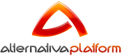
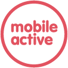
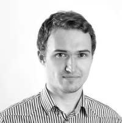
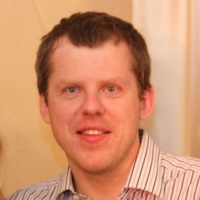
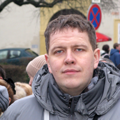
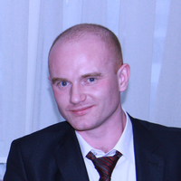
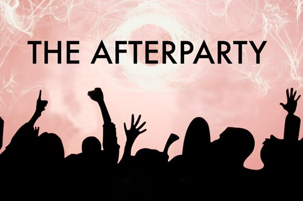

D59 - это первая пермская конференция разработчиков ПО
Время проведения: 27 апреля с 14:00 до 20:00.
Место проведения: г. Пермь, бизнес-центр «Синица», ул. Стахановская, 45.
Только лучшие ИТ-компании и лучшие разработчики, а также звезды пермской ИТ-сцены, всего максимум 100 человек по предварительной регистрации.
Яркие, живые доклады «полумарафончики» продолжительностью максимум 21 мин + 9 минут на вопросы-ответы.
Никакой рекламы, пропаганды и прочей ерунды, говорим только о своих продуктах и проектах, делимся опытом, любым, главное чтобы было интересно и полезно широкому кругу, и желательно свеженьким, не протухшим.
Интересные детали, технические подробности, выбор фреймворков, архитектура и прочие няшки которые любят разработчики. Отрицательный опыт также важен как положительный.
Кулуарное, неформальное общение. Интенсивный обмен опытом.
Суббота, 7-10 докладов по 30 минут + перерыв + завершающий ИТ-баттл.
Афтепати в одном из баров города.
Как принять участие?
Для того, чтобы стать участником конференции необходимо зарегистрироваться и оплатить участие. Стоимость участия в конференции - 1000 р. Для первых 25 зарегистрировавшихся (Early Bird) стоимость участия составит 600 р. А еще можно принять участие в конференции бесплатно, став докладчиком.
Регистрация
Важно! Все организационные расходы конференции покрываются исключительно за счет оплаты участия самими участниками. У мероприятия нет спонсоров, соответственно вы не услышите рекламных речей, никто не будет хантить ваших сотрудников и промывать им мозги. Все доклады будут исключительно содержательными и полезными для вашего профессионального развития.
Организатор конференции
Партнеры конференции
Партнеры конференции - это пермские компании, которые делегировали докладчиков и готовы поделиться своим опытом. Мы, организаторы конференции, очень благодарны им за это.


Инкогнито. Руководитель ИТ-компании
Выросший из подвала ИТ долларовый миллионер.
Rahul Panday
Выпускник IIT Kharagpur (индийский MIT), бывший сотрудник Sybase, работавший над оптимизатором запросов в одной из крупнейших промышленных СУБД. Ведущий разработчик, Knoema.
Роман Жихарев
Менеджер проектов широкого профиля с опытом в отраслях приема платежей, цифровой дистрибуции и (внезапно!) такси. http://www.linkedin.com/in/zhikharev
Владимир Бугай
Сооснователь и технический директор Knoema.
Евгений Нестеров
Руководитель направления разработки игр компании «Мобильный Актив».
Олег Черемисин
Ведущий инженер-программист ЗАО Новомет-Пермь. Мечтает, чтобы суровые энтерпрайзные приложения стали няшными и дружелюбными, а их пользователи счастливыми. Интересы в личное время: семья, путешествия.
Андрей Кожевников
Разработчик с десятилетним стажем. Заместитель руководителя направления разработки системного ПО компании "Прогноз".
Подробная программа конференции будет опубликована незадолго до ее начала. В настоящий момент можно ознакомиться с перечнем подтвержденных докладов ниже:
Опыт работы с разработчиками из России. Взгляд индийского разработчика :)
Выпускник IIT Kharagpur (индийский MIT), бывший сотрудник Sybase, работавший над оптимизатором запросов в одной из крупнейших промышленных СУБД, рассказывает о своем опыте работы с разработчиками из России и «индусском говнокоде».
Люди как основа ИТ-бизнеса: столкновение интересов хозяев и рабов, отрицательный опыт мотивации, пути решения
Руководитель одной из успешных пермских ИТ-компаний расскажет о своем опыте мотивации персонала и столкновении интересов наемных сотрудников и владельцев бизнеса.
Найти за одну секунду или интеллектуальный поиск данных в многогигабайтном массиве данных своими руками
Разработчики сайта knoema.com рассказывают о том, как им удалось реализовать почти мгновенный и лучший в своем классе поиск среди огромного массива данных без использования кластеров и вообще каких-либо серьезных вливаний в железо.
Опыт разработки онлайн игры «Путь тренера»
В докладе будет рассказано про современные способы построения серверных и клиентских решений на базе Scala и HTML5, а также про опыт разработки многопользовательских кросс-платформенных игр.
Высоконагруженные системы доставки контента: оптимизация аппаратных и человеческих затрат
Разработчики федеральной сети доставки контента, обслуживающей десятки тысяч пользователей, делятся своим опытом.
Мобильная разработка в суровом энтерпрайзе ))
Почему иногда не получается отдать разработку внешнему исполнителю, даже если очень хочется. Почему узкоспециализированные приложения могут пугать своей запутанностью. И как сделать всех счастливыми быстро и недорого.
Визуализация данных. Возрождение
Инструменты визуализации как новый язык работы с данными. Ремесло или искусство? Яркие примеры и тренды развития.
C Windows на Linux? Возможно!
Разработчик компании Прогноз расскажет об опыте портирования крупного (3M+ LOC) программного продукта с Windows на ОС семейства Linux.
Докладчикам
Если вам есть чем поделиться с пермским ИТ-сообществом и вы бы желали стать докладчиком, присылайте информацию о себе и теме вашего доклада на d59conf@knoema.com. Формат конференции расчитан на доклады широкого профиля, повествующие о собственном опыте на конкретных проектах без углубления в технические детали. Абсолютно не приветствуется открытая и скрытая реклама, пиар и прочие штучки, характерные для многих мероприятий.
Участникам
Если у вас возникли сложности при регистрации или оплате участия, пожалуйста, пишите нам в Facebook, Twitter либо на почту d59conf@knoema.com. Мы постараемся максимально оперативно решить ваши проблемы.
Прочие вопросы
По любым другим вопросам, касающимся конференции, вы можете обращатся к Владимиру @bougay, либо пишите на d59conf@knoema.com
D59 — это не только возможность послушать рассказы интересных людей на интересные темы, позадавать вопросы докладчикам и пообщаться в кулуарах с другими участниками, но и также общение участников в сильно неформальной обстановке…

Афтепати конференции пройдет в одном из баров города, вечером 27 апреля. Начало в 21:00, вход свободный, каждый платит сам за себя.
В программе продолжение обсуждения тем, затронутых на докладах, вам удастся вживую пообщаться с докладчиками в неформальной обстановке, и услышать их личное мнение на ту или иную тему.
Мало ли, чего они не досказывают в докладах, по нашему опыту самые интересные кейсы и слухи узнаются как раз на таких мероприятиях.
Ну и конечно же, горячительные напитки и закуски к вашим услугам.